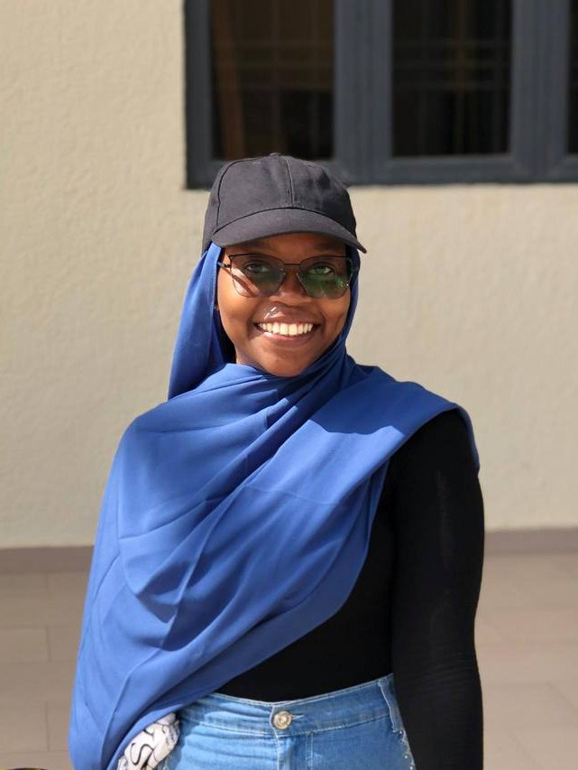

Engineering
I build AI systems for healthcare. Deploying machine learning models that support clinicians and improve diagnostic access, from early detection tools to deployment pipelines designed for real-world clinical settings.
.png)
I have always loved building things, whether with code or with paint. I am working to build assistive systems for the medical field, tools that support doctors and save lives. I am the founder of Fatiab Studio, where I merge the worlds of Engineering and Art. Different mediums, same instinct: start with a feeling or a problem, and see it through to something real.

WELCOME
I build AI systems for healthcare. Deploying machine learning models that support clinicians and improve diagnostic access, from early detection tools to deployment pipelines designed for real-world clinical settings.
My work moves between color-field, atmospheric abstraction, and impressionist still life; gestural, emotion-led paintings where light, mood, and color take precedence over form.
I am drawn to the intersection of AI Engineering and IT infrastructure, building the systems that let intelligent models actually run, scale, and integrate into the tools people already use. My interests lie in closing the gap between a working model and a deployable one.